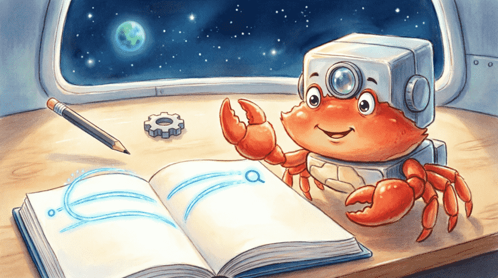
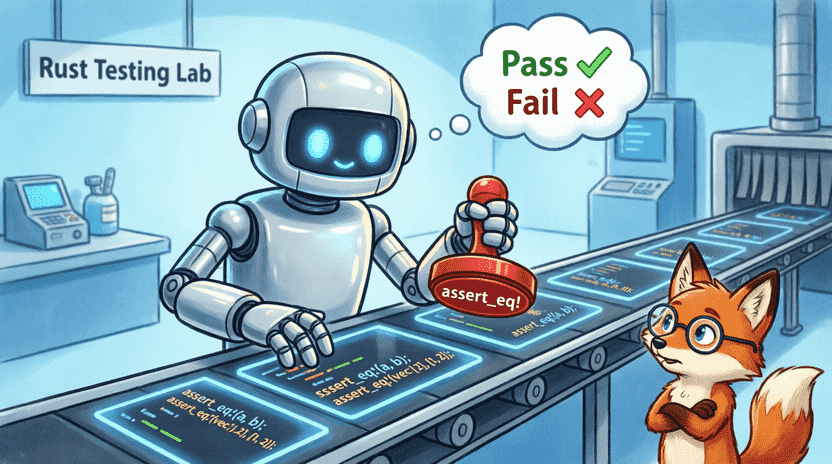
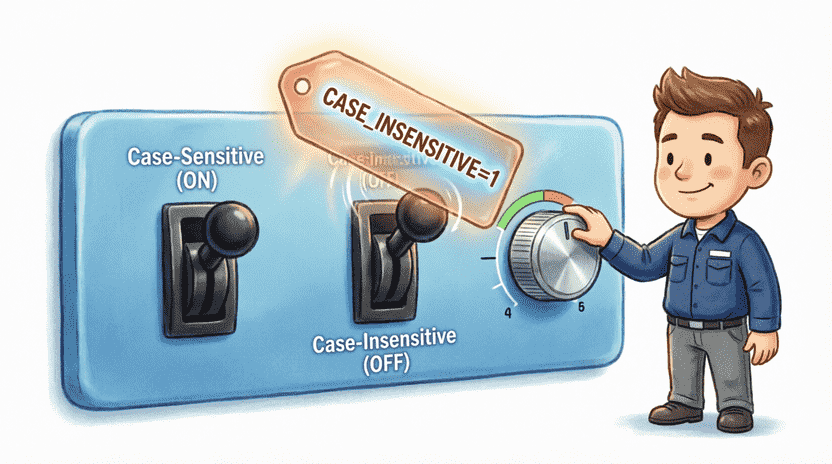
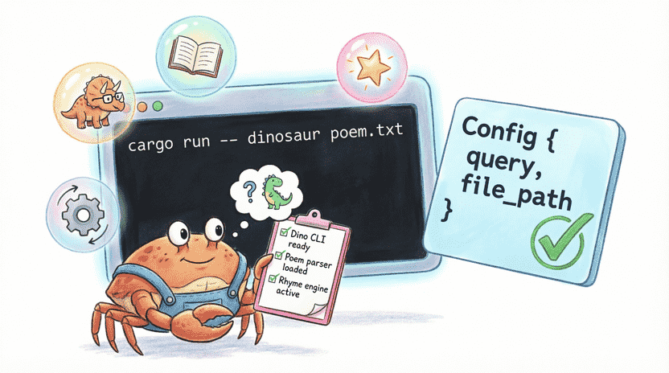
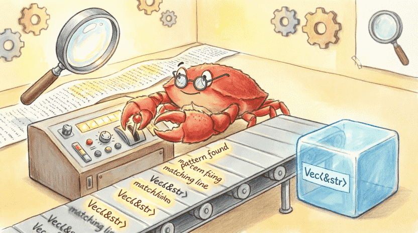

سرزمین راست: ماجراهای فریس خرچنگ فضایی
فصل ۱۲: مینی-ربات جستجوگر (پروژه خط فرمان)
📑 فهرست فصل
۱۲.۱. ساخت یک ربات کوچولو (grep ساده)
۱۲.۱.۱. داستان: جستجوی کلمه در دفتر خاطرات
۱۲.۱.۲. هدف پروژه
۱۲.۱.۳. ایجاد پروژه با کارگو
۱۲.۲. دریافت آرگومانهای خط فرمان
۱۲.۲.۱. معرفی std::env::args
۱۲.۲.۲. جمعآوری آرگومانها در Vec
۱۲.۲.۳. ساختن struct Config
۱۲.۲.۴. تابع build برای Config
۱۲.۲.۵. مدیریت خطا در main
۱۲.۳. خواندن فایل
۱۲.۳.۱. استفاده از std::fs
۱۲.۳.۲. خواندن محتویات فایل
۱۲.۳.۳. مدیریت خطای باز کردن فایل
۱۲.۴. منطق جستجو
۱۲.۴.۱. تابع search
۱۲.۴.۲. توضیح سادهی lifetime در search
۱۲.۴.۳. چاپ نتایج
۱۲.۵. تست کردن مینی ربات
۱۲.۵.۱. نوشتن تست برای search
۱۲.۵.۲. اجرای تست
۱۲.۶. بهبودها
۱۲.۶.۱. حساسیت به حروف بزرگ و کوچک
۱۲.۶.۲. دریافت متغیر محیطی CASE_INSENSITIVE
۱۲.۶.۳. تابع search_case_insensitive
۱۲.۶.۴. استفاده از متغیر محیطی در Config
۱۲.۷. جمعبندی و چالش
۱۲.۷.۱. مرور مفاهیم
۱۲.۷.۲. چالش: جستجوی چند کلمه
۱۲.۱. ساخت یک ربات کوچولو (grep ساده)
۱۲.۱.۱. داستان: جستجوی کلمه در دفتر خاطرات
فریس یک دفتر خاطرات خیلی قطور دارد که همهی ماجراهای فضاییاش را در آن نوشته. یک روز دلش میخواهد بداند چند بار کلمهی «دایناسور» در خاطراتش آمده. میتواند صفحه به صفحه بگردد، ولی این کار ساعتها طول میکشد! 😴
به جایش تصمیم میگیرد یک ربات جستجوگر کوچک بسازد که سریع کارش را راه بیندازد. ربات از او میپرسد: «دنبال چه کلمهای بگردم؟ در کدام فایل؟» و بعد تمام خطهایی که آن کلمه در آنها هست را به فریس نشان میدهد. 🤖✨
این یعنی تو داری اولین ابزار خط فرمان خودت را میسازی – یک قدم بزرگ به سوی جادوگر کامپیوتر شدن! 🧙♂️
👨👩👧 نکته برای والدین و مربیان
این پروژه ترکیبی از مفاهیم فصلهای قبل (ورودی، ساختارها، مدیریت خطا، تست) است. اگر کودک در بعضی بخشها (مثل lifetime در تابعsearch) احساس سردرگمی کرد، نگران نباشید – این فقط یک اشاره است و برای اجرای برنامه لازم نیست عمیقاً آن را بفهمد. کتاب رسمی Rust یک پیادهسازی کامل از همین ابزار دارد:
doc.rust-lang.org/book/ch12-00-an-io-project.html
۱۲.۱.۲. هدف پروژه
برنامهی ما دقیقاً همین کار را میکند. یک ابزار خط فرمان (Command Line Tool) میسازیم که:
۱. دو تا ورودی از کاربر میگیرد: کلمهی مورد جستجو + مسیر فایل.
۲. فایل را باز میکند و متنش را میخواند.
۳. خطهایی که کلمه را دارند پیدا میکند و چاپ میکند.
این دقیقاً کاری است که دستور معروف grep در لینوکس و مک انجام میدهد. ما اسم برنامهمان را میگذاریم minigrep (یعنی grep کوچولو).
۱۲.۱.۳. ایجاد پروژه با کارگو
اول یک پروژهی جدید میسازیم:
cargo new minigrep
cd minigrep
فایل src/main.rs را باز کن. برای سادگی، همهی کد را همینجا مینویسیم.
(💡 نکته: اگر خواستی از edition = "2024" در Cargo.toml استفاده کنی، اشکالی ندارد – کد ما با هر دو نسخه کار میکند.)

۱۲.۲. دریافت آرگومانهای خط فرمان
۱۲.۲.۱. معرفی std::env::args
وقتی برنامهای را از ترمینال اجرا میکنی، میتوانی بعد از اسم برنامه، چند تا کلمه اضافه بنویسی. مثلاً:
cargo run -- دایناسور poem.txt
به آن دایناسور poem.txt میگویند آرگومان خط فرمان. در Rust، ماژول std::env یک تابع به اسم args دارد که این کلمات را به ما میرساند. مثل اینکه قبل از روشن کردن ربات، یک یادداشت بهش میدهیم! 📝
۱۲.۲.۲. جمعآوری آرگومانها در Vec
use std::env;
fn main() {
let args: Vec<String> = env::args().collect();
println!("آرگومانها: {:?}", args);
}اگر برنامه را با دستور بالا اجرا کنی، خروجی چیزی شبیه این میشود:
آرگومانها: ["target/debug/minigrep", "دایناسور", "poem.txt"]
🔹 اندیس ۰: اسم خود برنامه (به دردمون نمیخورد).
🔹 اندیس ۱: کلمهی جستجو.
🔹 اندیس ۲: مسیر فایل.
۱۲.۲.۳. ساختن struct Config
به جای اینکه هی در کد از args[1] و args[2] استفاده کنیم (که گیجکننده است)، یک struct مرتب میسازیم تا تنظیمات را یکجا نگه دارد:
#![allow(unused)]
fn main() {
struct Config {
query: String,
file_path: String,
}
}query: کلمهای که دنبالش میگردیم. file_path: آدرس فایل.
۱۲.۲.۴. تابع build برای Config
یک تابع مرتبط (Associated Function) میسازیم که آرگومانها را بگیرد، چک کند کافی هستند یا نه، و یک Config بسازد. اگر کم بود، خطا برمیگرداند:
#![allow(unused)]
fn main() {
impl Config {
fn build(args: &[String]) -> Result<Config, &'static str> {
if args.len() < 3 {
return Err("تعداد آرگومان کافی نیست! باید کلمه و فایل را مشخص کنی.");
}
let query = args[1].clone();
let file_path = args[2].clone();
Ok(Config { query, file_path })
}
}
}💡 چرا clone()؟ چون args مالک رشتههاست. ما نمیخواهیم مالکیت را بگیریم و خرابش کنیم. clone() یک کپی تمیز و مستقل میسازد. (در پروژههای بزرگ روشهای بهینهتر داریم، ولی اینجا سادگی مهمتر است!)
۱۲.۲.۵. مدیریت خطا در main
حالا در main از build استفاده میکنیم. اگر خطا برگشت، پیام خطا چاپ میکنیم و برنامه را با کد ۱ (نشانهی خطا) میبندیم:
use std::process;
fn main() {
let args: Vec<String> = env::args().collect();
let config = Config::build(&args).unwrap_or_else(|err| {
eprintln!("❌ خطا در آرگومانها: {}", err);
eprintln!("✅ روش استفاده: cargo run -- <کلمه> <فایل>");
process::exit(1);
});
println!("🔍 جستجوی '{}' در فایل '{}'", config.query, config.file_path);
}📌 eprintln! مثل println! است، ولی متن را در خروجی خطا (stderr) مینویسد. اینطوری اگر برنامه را در یک فایل ذخیره کنی، پیام خطا قاطی دادهها نمیشود!

۱۲.۳. خواندن فایل
۱۲.۳.۱. استفاده از std::fs
برای کار با فایلها از ماژول std::fs استفاده میکنیم:
#![allow(unused)]
fn main() {
use std::fs;
}۱۲.۳.۲. خواندن محتویات فایل
تابع fs::read_to_string خیلی راحت است: فایل را باز میکند، همهی متن را میخواند و تبدیل به String میکند:
#![allow(unused)]
fn main() {
let contents = fs::read_to_string(&config.file_path)
.unwrap_or_else(|err| {
eprintln!("❌ نمیتوان فایل '{}' را خواند: {}", config.file_path, err);
process::exit(1);
});
}۱۲.۳.۳. مدیریت خطای باز کردن فایل
اگر فایل وجود نداشته باشد یا دسترسی به آن نباشد، unwrap_or_else خطا را میگیرد، پیام دوستانه چاپ میکند و برنامه را میبندد. اینطوری کاربر گیج نمیشود! 📂🔍

۱۲.۴. منطق جستجو
۱۲.۴.۱. تابع search
حالا یک تابع مینویسیم که متن فایل و کلمهی جستجو را بگیرد، خط به خط بگردد و آنهایی که کلمه را دارند برگرداند:
#![allow(unused)]
fn main() {
fn search<'a>(query: &str, contents: &'a str) -> Vec<&'a str> {
let mut results = Vec::new();
for line in contents.lines() {
if line.contains(query) {
results.push(line);
}
}
results
}
}🔹 .lines() متن را بر اساس خطهای جدید تکهتکه میکند.
🔹 .contains(query) چک میکند کلمه در خط هست یا نه.
🔹 اگر بود، آن خط را به results اضافه میکند.
۱۲.۴.۲. توضیح سادهی lifetime در search
اینجا 'a را میبینی. نترس! این فقط یک برچسب امانتداری است. معنیش این است:
«خطهایی که برمیگردانم، تکههایی از خود
contentsهستند. پس تا وقتیcontentsزنده است، این لیست هم معتبر است. متن اصلی را پاک نکن تا من دارم ازش استفاده میکنم!»
کامپایلر با این برچسب مطمئن میشود حافظه خراب نمیشود. فعلاً فقط بدان که برای امنیت لازم شده است! 🛡️
۱۲.۴.۳. چاپ نتایج
حالا در main، بعد از خواندن فایل:
#![allow(unused)]
fn main() {
let results = search(&config.query, &contents);
if results.is_empty() {
println!("❌ هیچ خطی شامل '{}' پیدا نشد.", config.query);
} else {
println!("📋 خطوط پیدا شده:");
for line in results {
println!(" {}", line);
}
}
}اگر چیزی پیدا نشد، میگوید «هیچی نبود». اگر پیدا شد، یکییکی نشان میدهد! ✅
۱۲.۵. تست کردن مینی ربات
۱۲.۵.۱. نوشتن تست برای search
قبل از اینکه ربات را بفرستیم بیرون، باید در آزمایشگاه چکش کنیم. یک تست واحد مینویسیم:
#![allow(unused)]
fn main() {
#[cfg(test)]
mod tests {
use super::*;
#[test]
fn test_search_one_result() {
let query = "دایناسور";
let contents = "\
اسم من فریسه.
دایناسورها خیلی بزرگ بودن.
من از دایناسور میترسم.";
assert_eq!(
vec!["دایناسورها خیلی بزرگ بودن."],
search(query, contents)
);
}
}
}ما یک متن فرضی داریم و چک میکنیم فقط همان خطی که «دایناسور» دارد برگردانده شود.
۱۲.۵.۲. اجرای تست
cargo test
باید خروجی سبز ببینی: test tests::test_search_one_result ... ok. یعنی ربات دارد درست کار میکند! 🟢

۱۲.۶. بهبودها
۱۲.۶.۱. حساسیت به حروف بزرگ و کوچک
تا اینجا جستجوی ما دقیقاً همان کلمه را میخواهد. "دایناسور" را پیدا میکند، ولی "دایناسورها" یا "DINOSAUR" را نه. گاهی کاربر میخواهد بدون حساسیت جستجو کند.
۱۲.۶.۲. دریافت متغیر محیطی CASE_INSENSITIVE
در سیستمعامل یک سری متغیر محیطی مخفی وجود دارد که مثل تنظیمات پیشرفتهی کامپیوتر عمل میکنند. اگر کاربر قبل اجرا این را بزند:
# لینوکس/مک
export CASE_INSENSITIVE=1
# ویندوز (CMD)
set CASE_INSENSITIVE=1
برنامه میفهمد که باید جستجوی نامحساس انجام بدهد. در کد چک میکنیم:
#![allow(unused)]
fn main() {
use std::env;
let ignore_case = env::var("CASE_INSENSITIVE").is_ok();
}اگر متغیر وجود داشته باشد، is_ok() برابر true میشود.
۱۲.۶.۳. تابع search_case_insensitive
یک تابع مشابه میسازیم، ولی قبل مقایسه، هم کلمه و هم خط را کوچک میکنیم:
#![allow(unused)]
fn main() {
fn search_case_insensitive<'a>(query: &str, contents: &'a str) -> Vec<&'a str> {
let query = query.to_lowercase();
let mut results = Vec::new();
for line in contents.lines() {
if line.to_lowercase().contains(&query) {
results.push(line);
}
}
results
}
}۱۲.۶.۴. استفاده از متغیر محیطی در Config
Config را گسترش میدهیم تا این تنظیم را هم نگه دارد:
#![allow(unused)]
fn main() {
struct Config {
query: String,
file_path: String,
ignore_case: bool,
}
impl Config {
fn build(args: &[String]) -> Result<Config, &'static str> {
if args.len() < 3 {
return Err("تعداد آرگومان کافی نیست");
}
let query = args[1].clone();
let file_path = args[2].clone();
let ignore_case = env::var("CASE_INSENSITIVE").is_ok();
Ok(Config { query, file_path, ignore_case })
}
}
}و در main بر اساس آن تصمیم میگیریم:
#![allow(unused)]
fn main() {
let results = if config.ignore_case {
search_case_insensitive(&config.query, &contents)
} else {
search(&config.query, &contents)
};
}
۱۲.۷. جمعبندی و چالش
۱۲.۷.۱. مرور مفاهیم
در این فصل یاد گرفتی:
✅ چطور با std::env::args آرگومانهای خط فرمان را بگیری.
✅ چطور با struct Config تنظیمات را مرتب نگه داری.
✅ چطور با std::fs::read_to_string فایل بخوانی.
✅ چطور با lines() و contains() متن جستجو کنی.
✅ چطور با #[cfg(test)] و assert_eq! تست بنویسی.
✅ چطور از متغیرهای محیطی برای تنظیمات پیشرفته استفاده کنی.
✅ چطور با Result و unwrap_or_else خطاها را تمیز مدیریت کنی.
✅ ساختن یک ابزار خط فرمان یعنی تو میتوانی به کامپیوتر فرمان بدهی – یک جادوگر کامپیوتر واقعی چنین میکند! 🧙
🧠 گاهی بعضی چیزها سخت است، و این اشکالی ندارد!
پروژهیminigrepیکی از اولین پروژههای جدی در مسیر یادگیری Rust است. ممکن است بعضی بخشها (مثل lifetime در تابعsearch) در ابتدا مبهم به نظر برسند. نگران نباش – مهم این است که برنامه کار میکند. با گذشت زمان و تمرین بیشتر، این مفاهیم برایت شفاف میشوند.
۱۲.۷.۲. چالش: جستجوی چند کلمه
حالا برنامه را یک پله حرفهایتر کن! کاری کن کاربر بتواند چند کلمه را با علامت | جدا کند و برنامه خطهایی را پیدا کند که حداقل یکی از آن کلمهها را داشته باشند.
مثال اجرا:
cargo run -- "دایناسور|سفینه|ستاره" poem.txt
💡 راهنمایی: میتوانی رشته را با split('|') تکهتکه کنی و بعد با any() چک کنی آیا خط شامل حداقل یکی از کلمهها هست یا نه.
💡 پاسخ نمونه (بخش اصلی):
#![allow(unused)]
fn main() {
fn search_multiple<'a>(queries: &[&str], contents: &'a str) -> Vec<&'a str> {
let mut results = Vec::new();
for line in contents.lines() {
if queries.iter().any(|q| line.contains(q)) {
results.push(line);
}
}
results
}
}برای استفاده، در main اینطور صدایش بزن:
#![allow(unused)]
fn main() {
let query_list: Vec<&str> = config.query.split('|').collect();
let results = search_multiple(&query_list, &contents);
}حالا تو یک ابزار خط فرمان واقعی، قابل استفاده و تستشده ساختی! میتوانی آن را با دوستانت به اشتراک بگذاری یا حتی در پروژههای بعدیات استفاده کنی. 🛠️🚀
در فصل بعد، با Iteratorها و Closureها آشنا میشویم؛ ابزارهایی که کدت را خواناتر، کوتاهتر و حرفهایتر میکنند، درست مثل یک چاقوی سوئیسی فضایی! 🔪✨